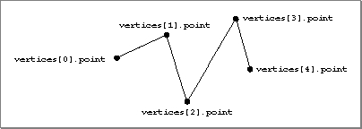

Polylines
A polyline is a collection of n lines defined by the n+1 points that define the endpoints of each line segment. The entire polyline can have a set of attributes, and each line segment in the polyline also can have a set of attributes. (In addition, each vertex can have a set of attributes.) A polyline is defined by theTQ3PolyLineDatadata type. See "Creating and Editing Polylines," beginning on page 4-68 for a description of the routines you can use to create and edit polylines. Figure 4-11 shows a polyline.Figure 4-11 A polyline
- IMPORTANT
- A polyline is not closed. The last point should not be connected to the first.

typedef struct TQ3PolyLineData { unsigned long numVertices; TQ3Vertex3D *vertices; TQ3AttributeSet *segmentAttributeSet; TQ3AttributeSet polyLineAttributeSet; } TQ3PolyLineData;
Field Description
numVertices- The number of vertices in the polyline. The value of this field must be at least 2.
vertices- A pointer to an array of vertices which define the polyline.
segmentAttributeSet- A pointer to an array of segment attribute sets. If no segments in the polyline are to have attributes, this field should contain the value
NULL. If any of the segments have attributes, this field should contain a pointer to an array (containingnumVertices- 1 elements) of attributes sets; the array element for segments with no attributes should be set toNULL.polyLineAttributeSet- A set of attributes for the polyline. The value in this field is
NULLif no polyline attributes are defined.